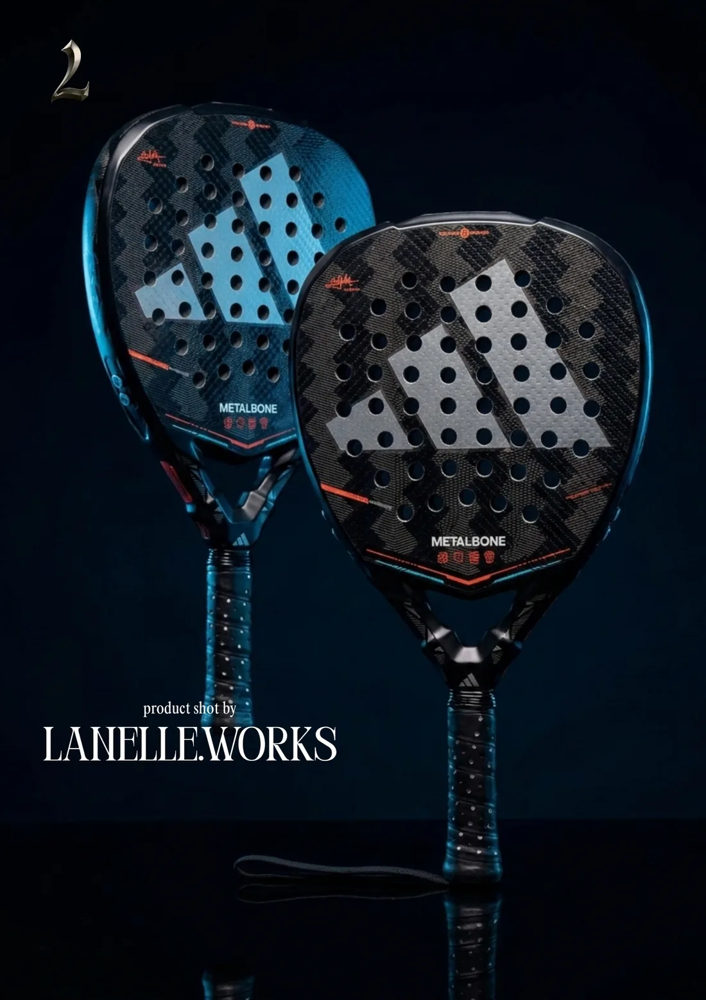
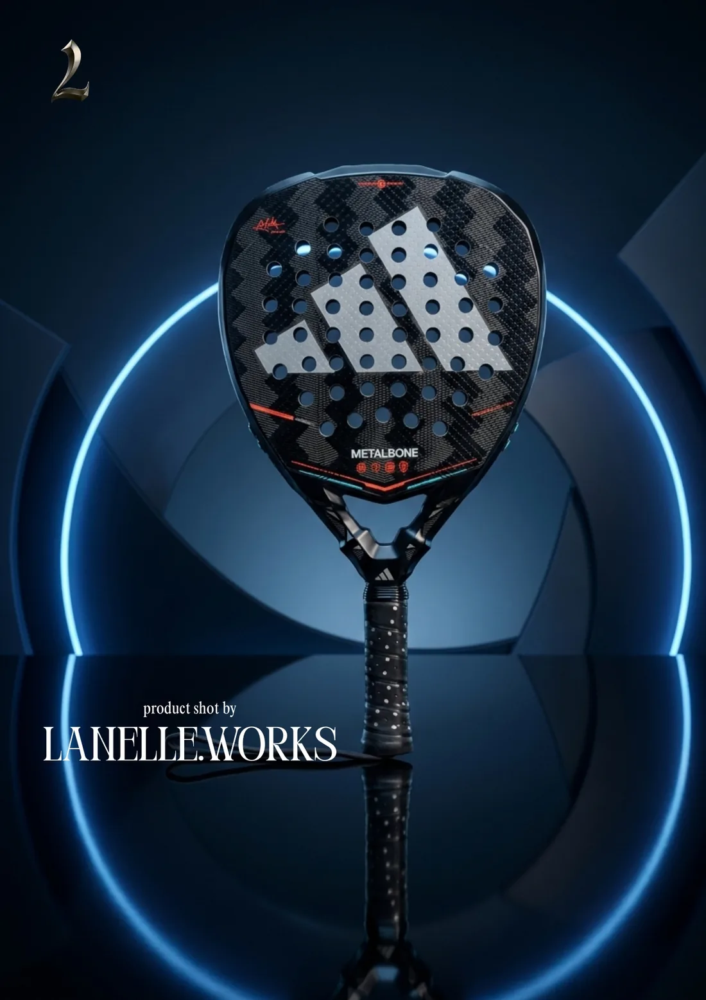
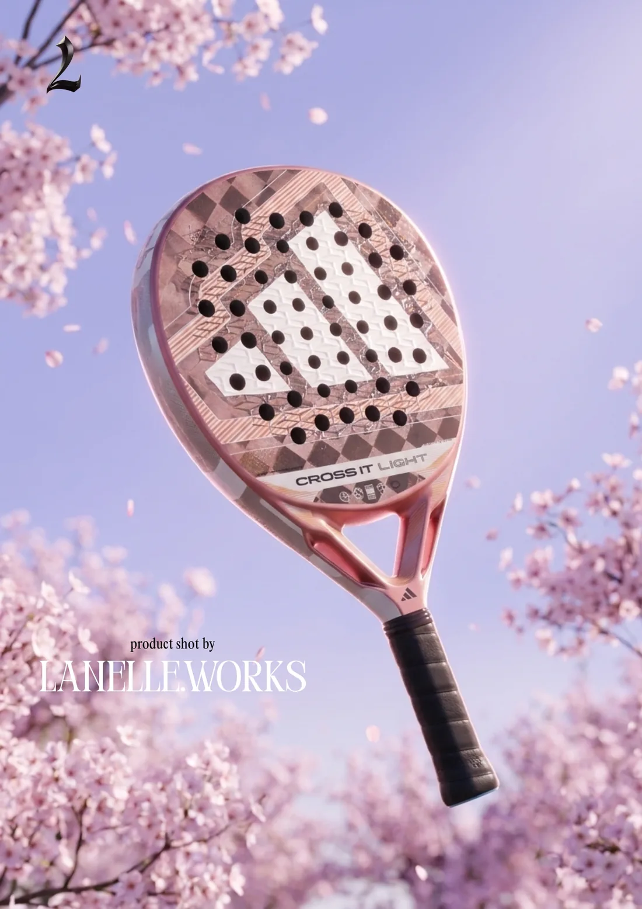
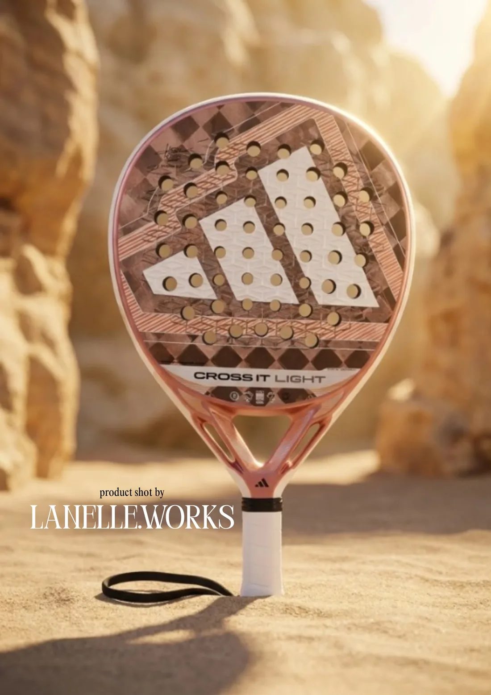
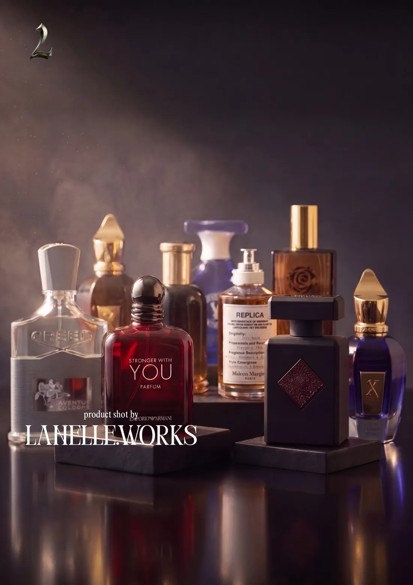
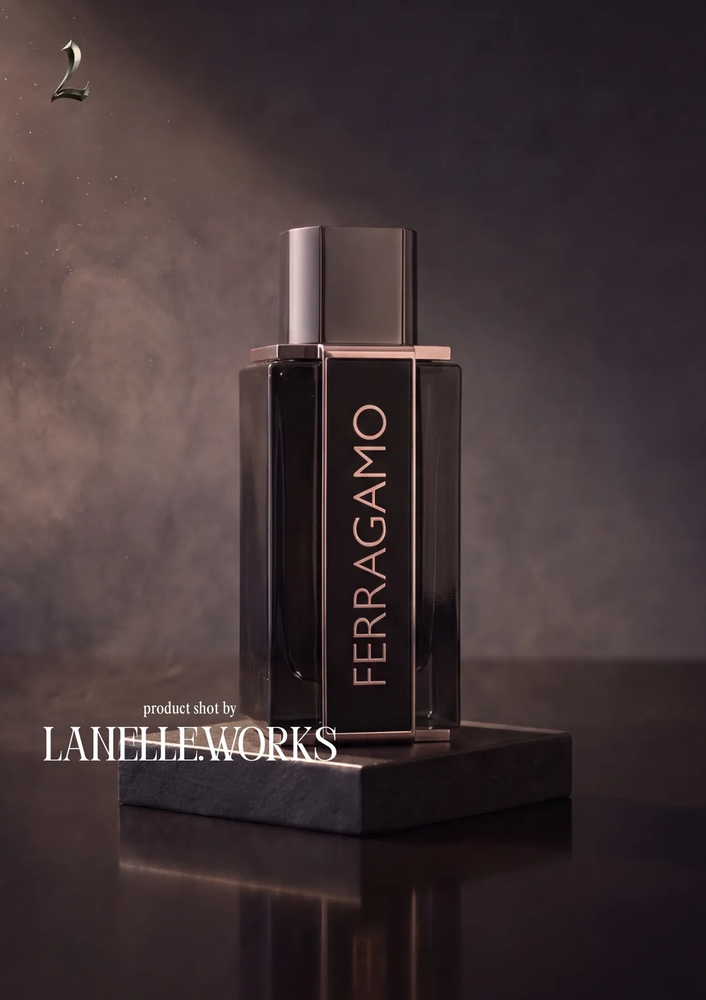

Product shots
Self-initiated concept work, not client commissions. One product carried through several different worlds — the range a single shoot has to cover when content ships every week.
Content Systems